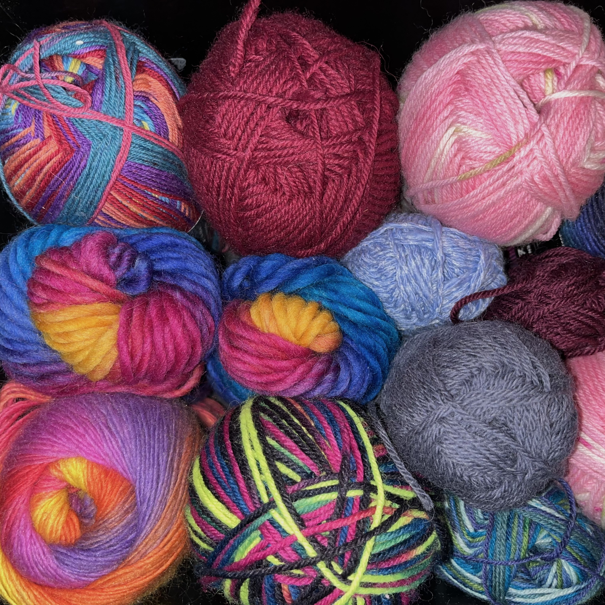
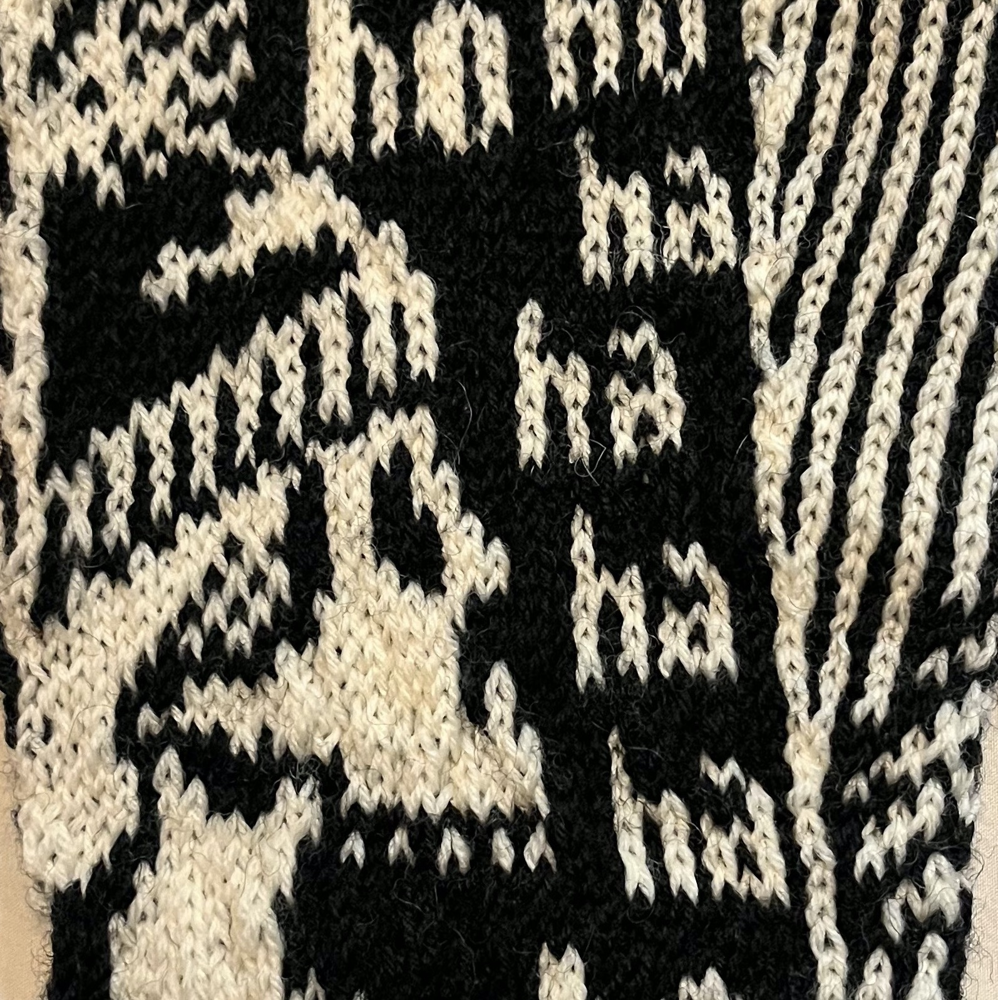

Tule nauttimaan tai vaihtoehtoisesti kärsimään mun villasukista, jos olet täällä vasten tahtoasi. Sori siitä...
Nyt kun olet tänne eksynyt syystä tai toisesta, niin katso ihmeessä ympärillesi. Tämän sivuston sydän on ehdottomasti kuvagalleria. Sieltä pääset katselemaan mun tekemiä töitä. "Ohje" sivulta pääset itsekin neulomaan tai ainakin vähintään katsomaan mun ohjetta. Historiasta voit lueskella mun lärpätyksiä. Ei oo liian pitkä teksti. Tai ehkä vähän, muttei ihan kauheesti liian pitkä. "Muuta" sivulta pääset tsekkaamaan jotain mun suosikki liikkeitä ja nettisivuja.